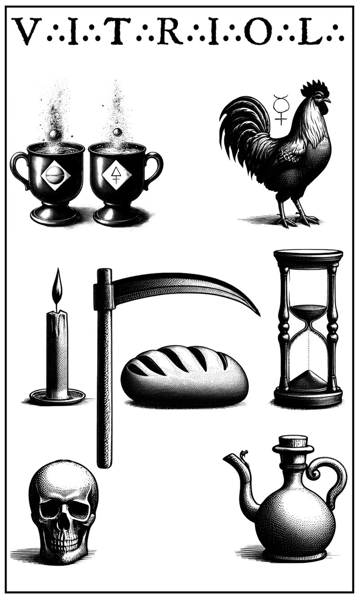
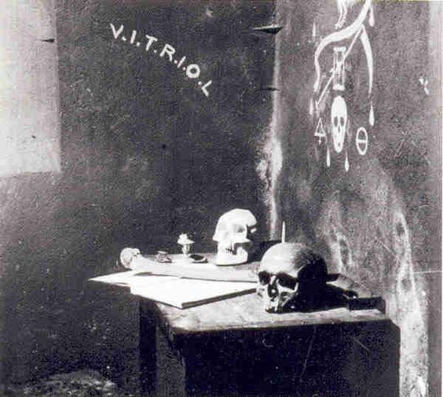
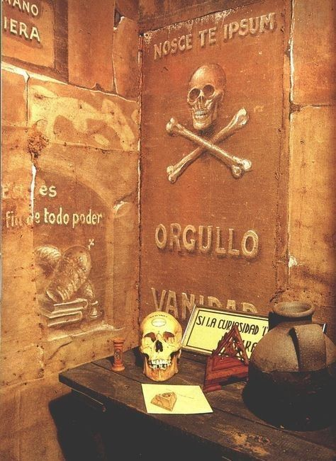
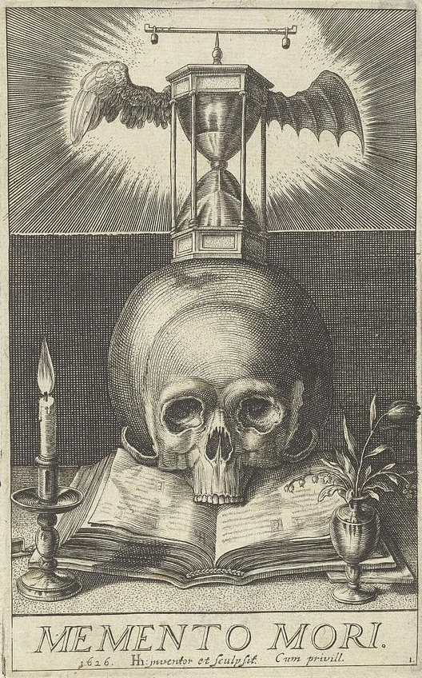
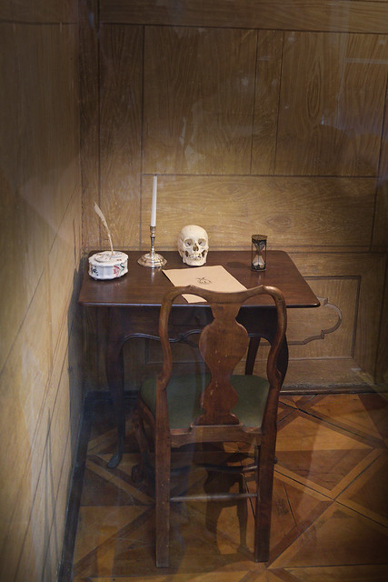

A Câmara de Reflexão

Prefácio
A Câmara de Reflexão é um espaço de meditação e introspecção usado na iniciação maçônica. É um ambiente escuro e simbólico, onde o candidato é deixado para refletir sobre sua decisão de ingressar na Maçonaria. Os diversos símbolos e itens presentes na câmara são cuidadosamente escolhidos para incitar reflexões profundas sobre a vida, a morte, e a jornada espiritual.
Símbolos na Câmara de Reflexão
• O Espelho: Representa a introspecção e o autoconhecimento. O espelho convida o candidato a olhar para si mesmo, a refletir sobre suas ações e a reconhecer suas falhas e virtudes. É um símbolo de honestidade consigo mesmo, essencial para o crescimento pessoal e espiritual.
• A Ampulheta: Simboliza a passagem do tempo e a transitoriedade da vida. A ampulheta lembra ao candidato que o tempo é finito e que a vida deve ser vivida de maneira significativa, com propósito e direção.
• A Foice: Representa a morte e a inevitabilidade do fim. A foice é um símbolo da ceifadora, lembrando o candidato da fragilidade da vida e da necessidade de se preparar espiritualmente para a mortalidade.
• O Sal: Simboliza a pureza e a incorruptibilidade. O sal tem a capacidade de preservar e purificar, representando a necessidade de manter a integridade e a virtude ao longo da vida.
• O Enxofre: Representa a transmutação e a transformação. O enxofre é um elemento alquímico associado ao fogo e à mudança, indicando a necessidade de transformação interna e a purificação espiritual.
• O Mercúrio: Simboliza a sabedoria, a comunicação e o equilíbrio. Na alquimia, o mercúrio é um dos três princípios essenciais, junto com o sal e o enxofre, e representa a fluidez e a adaptabilidade. Ele é associado à mente e ao intelecto, incentivando o candidato a buscar conhecimento e compreensão.
• O Pão e a Água: Representam a simplicidade e a sustância necessárias para a sobrevivência. Estes elementos lembram o candidato da importância de se contentar com o que é essencial e de não ser excessivamente apegado a luxos materiais.
• O Galo: Simboliza a vigilância e o despertar. O galo é conhecido por anunciar o amanhecer, representando a necessidade de estar atento e consciente, de despertar para novas possibilidades e verdades.
• A Vela: Representa a luz e a orientação espiritual. A vela ilumina a escuridão da Câmara de Reflexão, simbolizando a busca pela verdade e pelo conhecimento. Ela também serve como um lembrete da presença da divindade, guiando o candidato através da escuridão da ignorância para a luz da sabedoria.
• A Caneta e o Papel: São fornecidos para que o candidato escreva suas reflexões e respostas a perguntas filosóficas. Este ato de escrita promove a introspecção e a clareza de pensamento.
• A Caveira: Representa a mortalidade e a igualdade na morte. A caveira é um lembrete sombrio da morte inevitável, que nivela todas as distinções sociais e materiais.
V∴I∴T∴R∴I∴O∴L∴
O acrônimo V.I.T.R.I.O.L. significa "Visita Interiora Terrae Rectificando Invenies Occultum Lapidem", que se traduz para "Visita o interior da terra e, ao retificar-te, encontrarás a pedra oculta". Esta frase alquímica encoraja o candidato a explorar as profundezas de sua própria alma, a enfrentar suas sombras e imperfeições, e a trabalhar na sua transformação interna para descobrir a verdade e a sabedoria escondidas.
Direções (Norte, Sul, Leste, Oeste)
Na Câmara de Reflexão, as direções podem estar simbolicamente marcadas para representar diferentes aspectos da jornada do candidato:
• Norte: Simboliza o desconhecido e o mistério.
• Sul: Representa a clareza e o calor da compreensão.
• Leste: Simboliza o nascer do sol, a luz e o início de uma nova jornada.
• Oeste: Representa o pôr do sol, o fim de um ciclo e a reflexão.
Palavras e Expressões
• "VATTENE": É uma expressão italiana que significa "vá embora" ou "retire-se". Pode ser vista como uma expulsão simbólica das distrações e impurezas internas antes da iniciação.
• "VANIDAD": (Vaidade) A vaidade é a busca constante por aprovação e elogios dos outros. Ela pode desviar o foco do verdadeiro propósito da vida e do trabalho espiritual. Na reflexão, o candidato deve confrontar sua própria vaidade e se esforçar para encontrar valor intrínseco em suas ações, em vez de depender da aprovação externa.
• "ORGULLO": (Orgulho) Esta palavra alerta o candidato sobre os perigos do orgulho excessivo. O orgulho pode cegar a pessoa para suas próprias falhas e impedir o crescimento pessoal. Na Câmara de Reflexão, o candidato é incentivado a reconhecer e superar seu orgulho, buscando a humildade.
• "VIGILATE": (Vigiai) Esta palavra exorta o candidato a estar sempre alerta e consciente de seus pensamentos e ações, promovendo a vigilância constante sobre si mesmo e suas motivações.
• "SILENTIUM": (Silêncio) Um lembrete da importância do silêncio e da contemplação, sugerindo que, muitas vezes, o verdadeiro conhecimento e entendimento vêm da quietude interior.
• "MEMENTO MORI": (Lembra-te que vais morrer): Um lembrete da mortalidade humana, que visa instilar um senso de urgência e propósito na vida do candidato, encorajando-o a viver com intenção e significado.
• "NOSCE TE IPSUM": (Conhece-te a ti mesmo): Esta expressão, de origem latina, é um convite ao autoconhecimento, incentivando o candidato a olhar para dentro e entender suas próprias forças e fraquezas.
• "Vedrai La Luce": Significa "verás a luz". É uma promessa de iluminação e conhecimento que aguarda o candidato após a jornada de introspecção e purificação.
• "Si la curiosidad te trajo aquí, vuelve atrás": (Se a curiosidade te trouxe aqui, volte atrás): Esta frase serve como um aviso para aqueles que entram na Maçonaria apenas por curiosidade superficial, sem um verdadeiro desejo de autoconhecimento e transformação. O candidato é desafiado a examinar suas motivações e a se comprometer sinceramente com o processo de iniciação.
Reflexão
A Câmara de Reflexão é um espaço profundamente simbólico, projetado para incitar o candidato a refletir sobre sua vida, suas ações, e seu propósito. Os diversos símbolos e itens presentes incentivam a introspecção e a transformação pessoal. Através desta experiência, o candidato é preparado para os mistérios e ensinamentos mais profundos da Maçonaria, comprometendo-se com um caminho de crescimento pessoal e espiritual em busca da verdade, sabedoria, e iluminação interior.